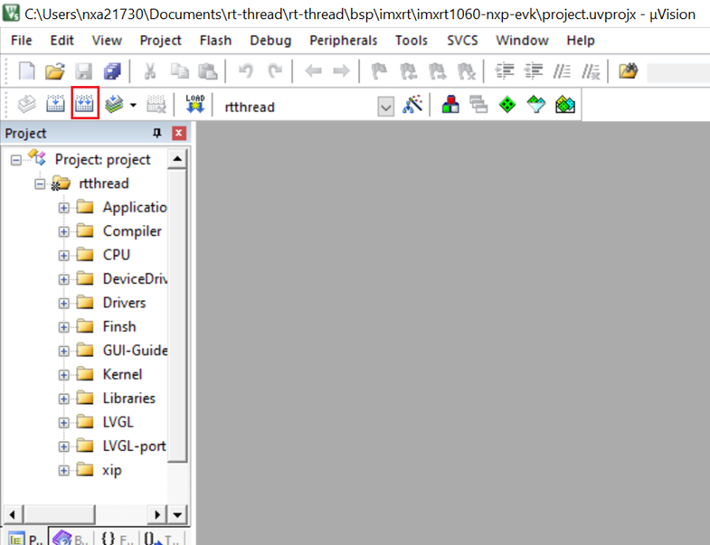
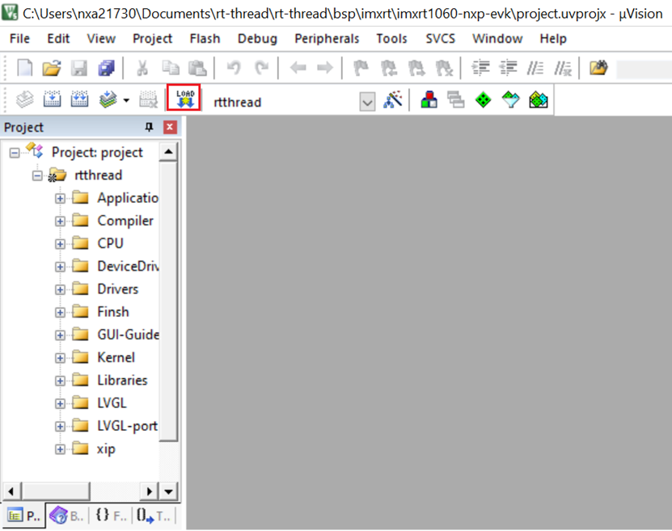

To build and compile, perform the following steps:
project.uvprojx in D:\rt-thread\rt-thread\bsp\imxrt\imxrt1060-nxp-evk and rebuild all the files.lvgl/lvgl.h with lvgl.h.Error: src.c(10): error: 'lvgl/lvgl.h' file not found

After performing the above steps, the GUI application designed by GUI Guider can be compiled in RT-Thread and run on i.MX RT1060 board.